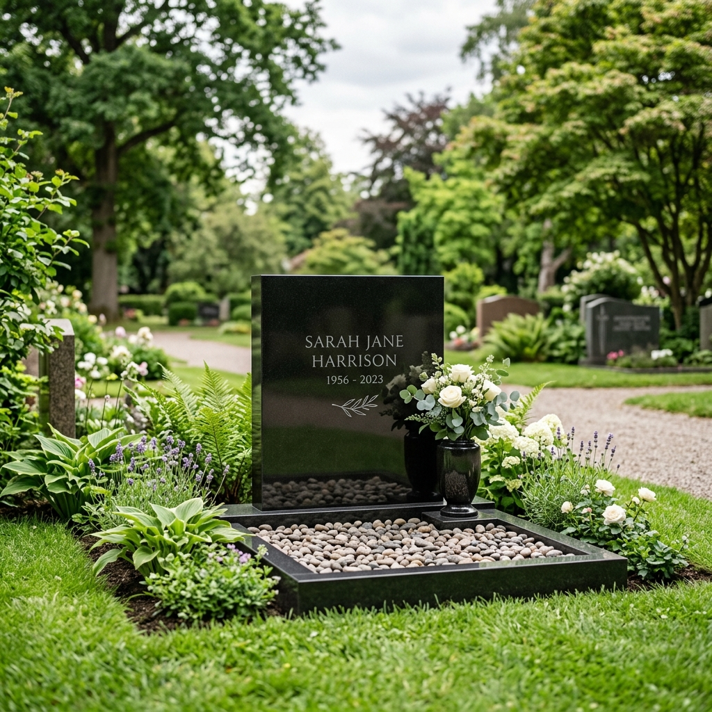
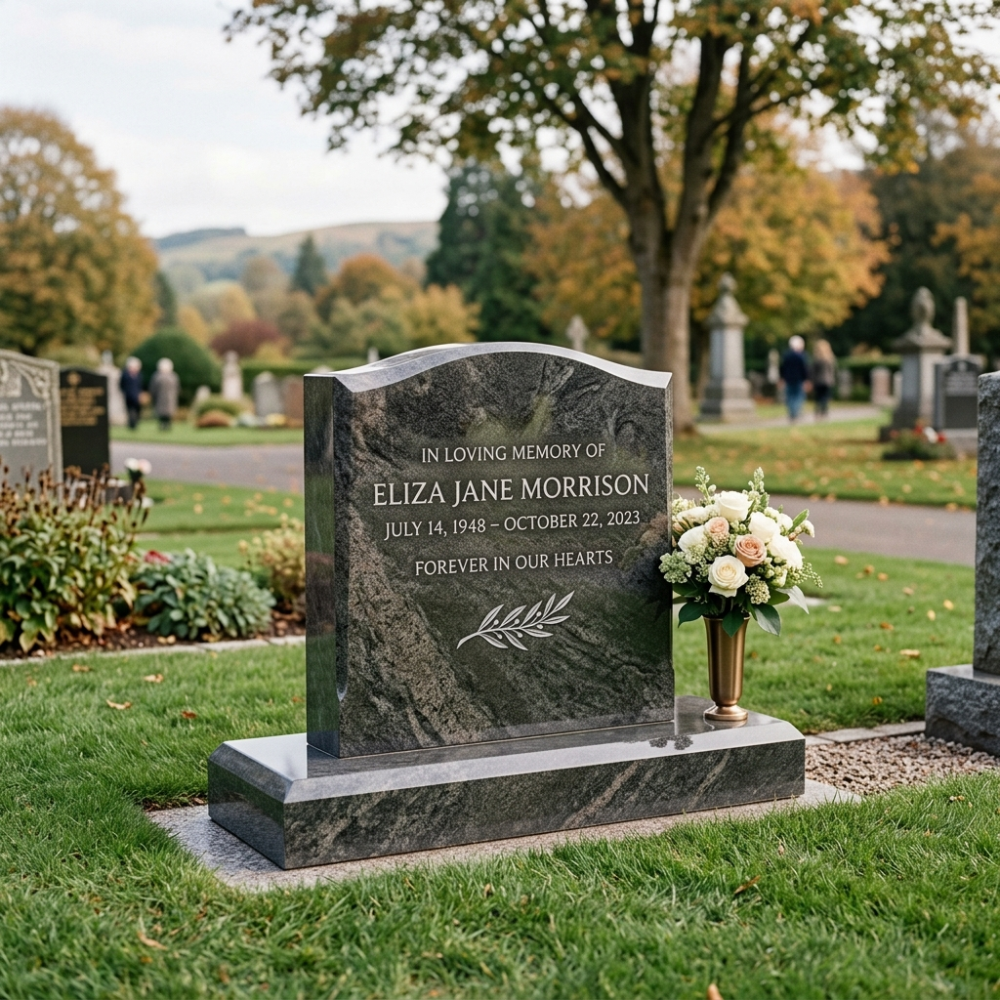
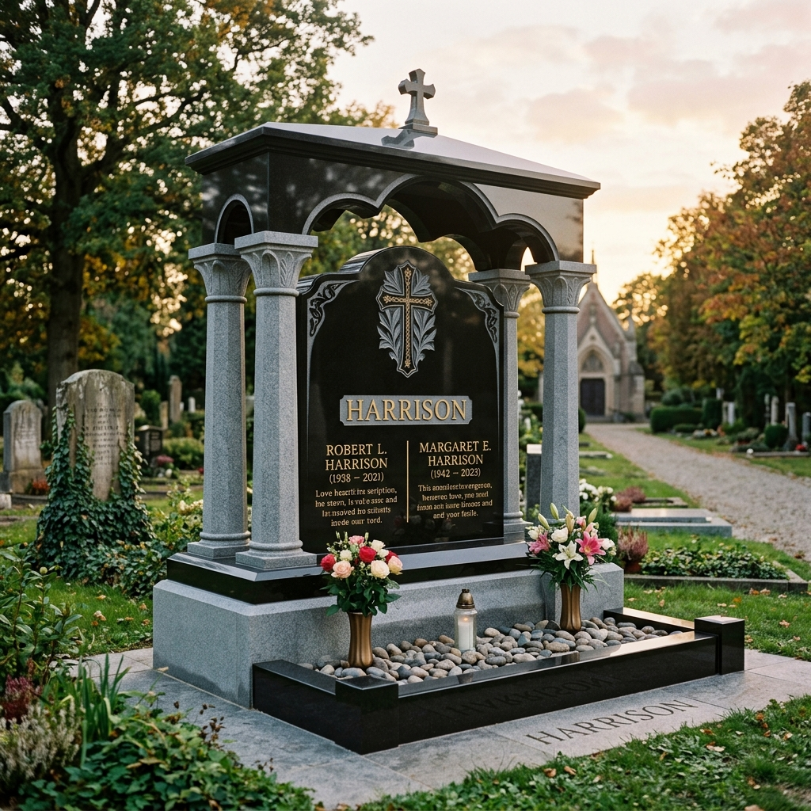
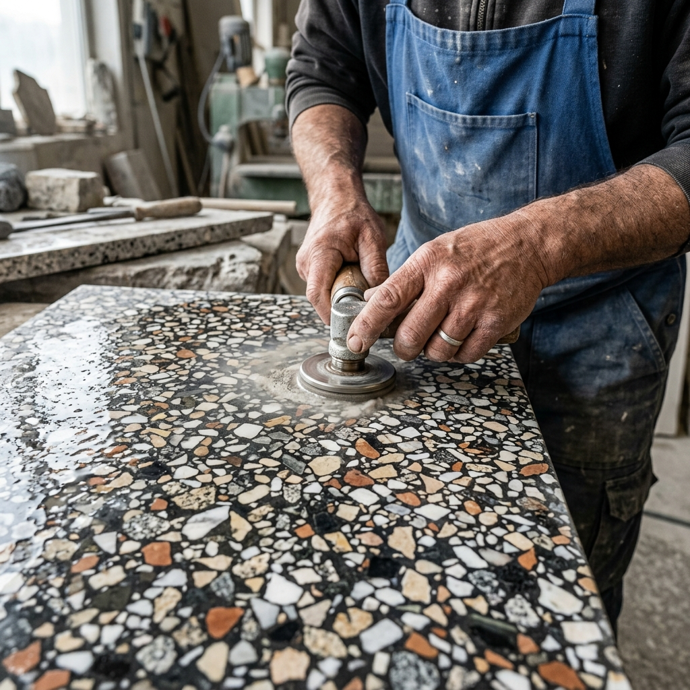

Důstojná a věčná památka z přírodního kamene, vytvořená s pokorou k řemeslu.
Vyrábíme pomníky a náhrobky z přírodního kamene pro věčnou a důstojnou památku na zesnulé. Provádíme individuální výrobu, opravy a renovace, vždy s ohledem na Vaše přání a finanční možnosti. Pomníčky vyrábíme i pro Vaše zvířecí mazlíčky.
Sídlíme na Vysočině, ale naše realizace dodáváme a montujeme po celé České republice. Používáme širokou škálu tuzemských i dovozových žul v mnoha barevných odstínech.
Abychom Vám v těžkých chvílích ulehčili starostem, zajišťujeme vše od základu až po konečnou montáž:

Slouží k ukládání uren s popelem. Skládají se z žulových rámů, krycí desky a pomníku. Menší rozměry umožňují umístění i v omezeném prostoru.

Rozměry cca 110x250 cm pro ukládání rakve. Vyžadují bytelný betonový základ. Realizujeme kompletně včetně výkopových prací a základů.

Pro ukládání dvou rakví vedle sebe, rozměr cca 200x250 cm. Skládá se z více krycích desek (3-5 dílů). Důraz na statiku a přesnost usazení.

Teraso (míchaná kamenná drť) je cenově dostupnější variantou oproti čisté žule. Jako jedna z mála firem se stále věnujeme výrobě a opravám těchto tradičních hrobů.
Cena prací je individuální dle rozsahu poškození a stavu hrobu. Provádíme úpravy hotových hrobů, čištění a kompletní demontáže.

Chtěli byste důstojnou památku na zesnulého zvířecího mazlíčka? Vyrobíme pomníček dle Vašich přání za přijatelnou individuální cenu.
Mám zájem o zvířecí pomníček